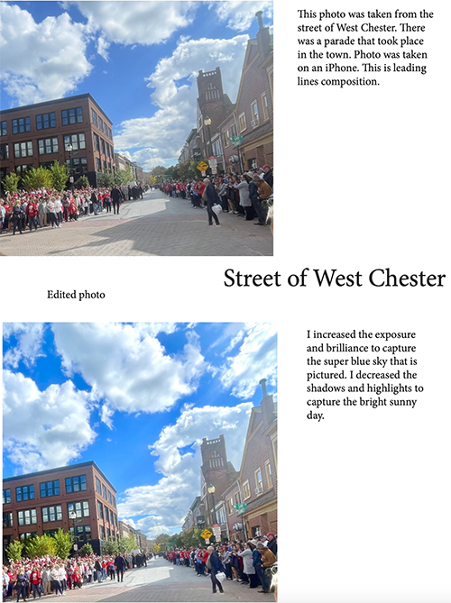

Photography Project |
||
| Home Print Project Photo Project Infographic Project | ||
|
 Student at Millersville University |
For my class photography project, I took a series of pictures and edited them to show different effects. The top picture is the original, untouched photo. The bottom picture is the edited version, where I adjusted brightness, contrast, and color saturation to make the image stand out. This comparison highlights how editing can enhance a simple photo. |
Home Print Project Photo Project Infographic Project |
|
© 2025 Conor McCartney | ||